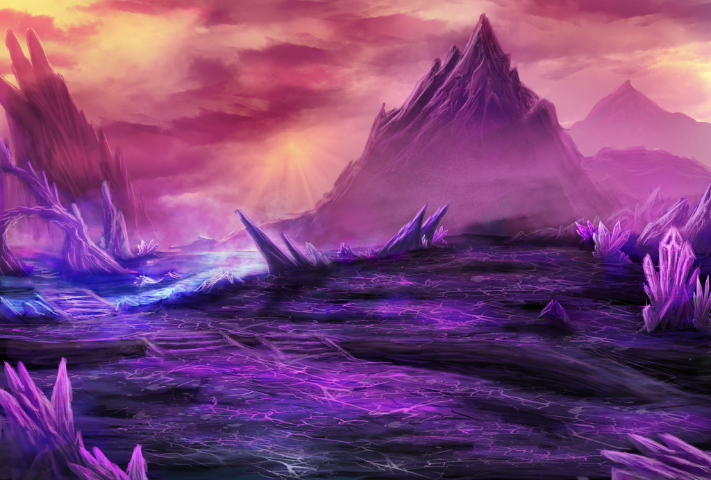
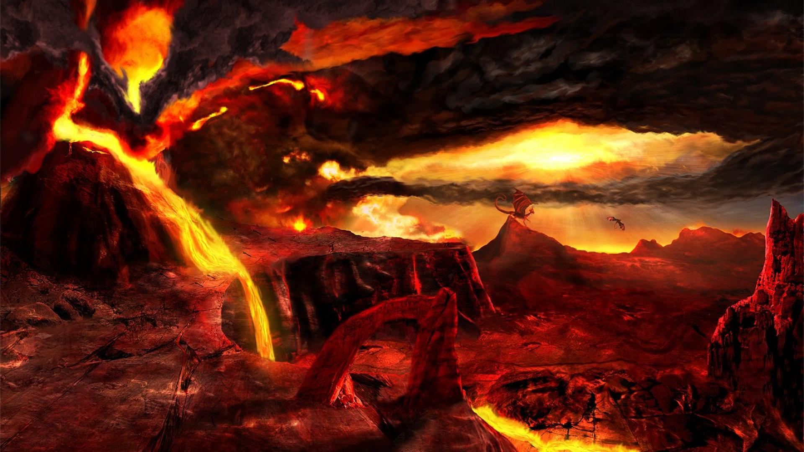
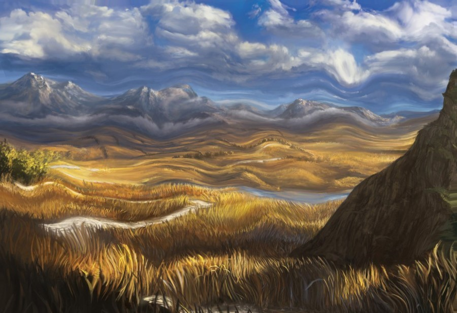
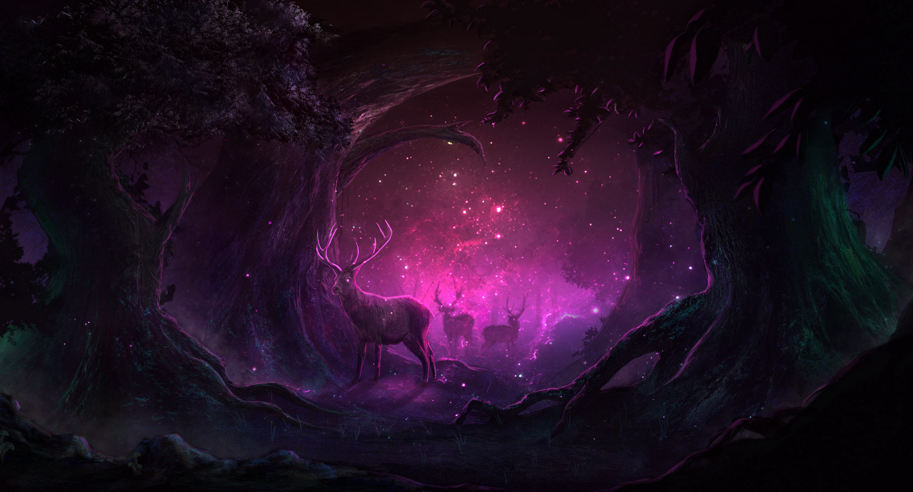
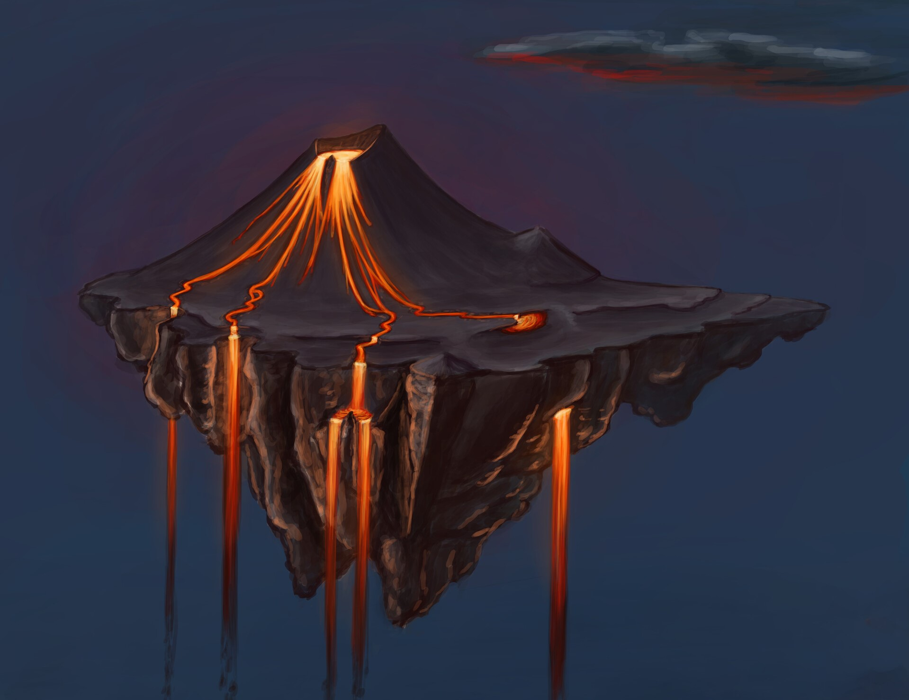

Crystal Flats
The Crystal Flats look like any other biome, with the major exception that everyhting is covered in a crystalline substance. Strangely enough, the only aspect of everything is the texture and appearance. Crystal trees can still be chopped down by a normal axe as if it were a normal tree. Rocks are still easily chipped by picaxes, and grass still blows in the wind. No one knows what causes this phenomenon, but it is suspected that the ruler of these lands, the Crystal Queen has something to do with it.

Helllands
The Helllands, a barren wasteland of fire, volcanoes, lava and devils. The Helllands are anything but natural and are caused by the energies of hell seeping through a rift in reality. Many have tried to close the rift and stop the spread of hell into our world, but no one has every returned after entering the Helllands.

Shiftlands
The Shiftlands make most people vomit from just looking at it with how nauseating they are. The land has the constant illusion that the land is moving, but people inside the Shiftlands will quickly realize that they do not move with the lands and it seems the land moves without them. It is an explorers worst nightmare to traverse as no landmarks are permenant and even seasoned adventurerers get lost in minutes.

Aberrant Forest
The Aberrant Forest is a corrupted Fey Forest filled with dark, mystical, fey creatures. Trees are dark purple with light purple leaves, all animals seem to bare the same dark purple eyes and even prey can become predators in these cursed lands. Beasts of all kind wander through this forest, but are forever altered by the energy of the corrupted woods.

Ember Shard Isles
The Ember Shard Isles are the safe haven of all dragons. No other beast resides there. People will hunt dragons for a multitude of reasons, whether it be for the uses their corpses provide or just as a trophy for bragging rights. There is only one group of humanoids that are allowed on the Ember Shard Isles, and those are the Dragon Riders, they have made an oath to the dragons to protect dragons at all costs, in return the dragons provide them companionship and all dragons will let Dragon Riders live.